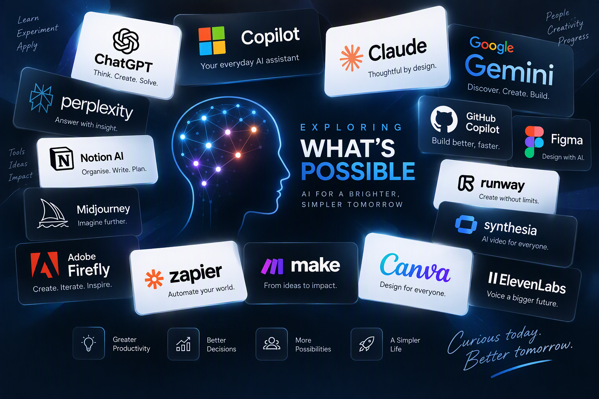

Leading the MyO2 transformation
Product and platform investment spanning 22 core capabilities, around 100 pages and around 60 redesigned APIs.
Senior Digital Product & Transformation Leader
I shape customer, digital and operational products across complex organisations, combining product strategy, hands-on leadership, technology, data and commercial thinking to deliver measurable outcomes.
Explore my impactAbout me
I translate customer, colleague and commercial needs into prioritised roadmaps and measurable outcomes. My experience spans customer acquisition, CRM-enabled self-service, digital adoption, retention, payments and commercial growth.
I bring Product, Engineering, UX, Architecture, Data and Commercial teams together around clear problems and evidence. I use customer insight, analytics, experimentation and live performance data to decide what to launch, refine, scale or stop.
Alongside setting direction, I stay close to delivery: resolving trade-offs, strengthening product ownership and creating the conditions for multidisciplinary teams to move with confidence.
Selected achievements
Product and platform investment spanning 22 core capabilities, around 100 pages and around 60 redesigned APIs.
Benefits realised against a £40m target through digital adoption, journey optimisation and reduced outsourced costs.
Fewer calls each month by expanding and optimising Virgin Mobile digital self-service.
Higher delivery velocity after moving squads from Scrum to Kanban to improve flow and expose constraints.
Three-year ROI from Virgin Mobile self-service optimisation, alongside securing £2.1m of investment.
Growth in collections self-service, contributing to operational savings equivalent to around 50 FTE.
Career history
 Virgin Media O2
Virgin Media O2Lead the product vision, roadmap and transformation of MyO2 and its wider digital self-service proposition. Coach five Product Owners and lead senior trade-off decisions across investment, capacity, risk, dependencies and value.
Virgin Media O2Accountable for digital self-service optimisation, combining customer insight, product performance and commercial outcomes to improve adoption, containment and value.
Led digital product strategy and delivery for Virgin Mobile and My Virgin Media billing and payments, serving more than six million customers.
Owned strategy, roadmap and delivery for online and self-service transformation across customer experience, digital marketing, platform change and governance.
Owned the digital strategy, roadmap, budget, and risk-and-reward performance for collections customer contact and payment channels.
Managed strategic and operational relationships with financial services and insurance partners, including mobilisation, commercial development and ongoing performance.
Owned the Sainsbury’s Bank unsecured personal loan product and managed the HBOS joint venture, delivering approximately £700m in annual gross lending.
Professional development
Skills
I bring clarity to complex product portfolios, translating customer needs, commercial priorities and technology constraints into a clear vision, roadmap and set of outcomes. I’m equally comfortable setting direction with senior leaders and getting into the detail with Product Owners and delivery teams to turn that strategy into something real.
I connect customer problems with commercial opportunity. Using research, behavioural insight, analytics and experimentation, I identify where journeys can be simpler, where digital adoption can grow and where better experiences can improve conversion, retention and cost-to-serve. The focus is always on change that customers notice and the organisation can measure.
I bridge the gap between product, technology and business. I’ve led products across complex digital platforms, APIs, CRM, web and mobile, working closely with Engineering and Architecture to make pragmatic technology choices. I use analytics, A/B testing and live product performance to challenge assumptions and decide what to launch, improve, scale or stop.
I bring multidisciplinary teams together around clear outcomes and give Product Owners the space and accountability to lead. I’m comfortable operating across Product, Engineering, UX, Data, Commercial and senior leadership, resolving trade-offs around investment, capacity, risk and dependencies while keeping delivery moving. I stay close enough to the detail to unblock problems without losing sight of the bigger picture.
Beyond work
When I’m not working, life is mostly about family, fresh air and finding good ways to switch off. With two kids there’s rarely a dull moment, and I make time for the places, interests and everyday discoveries that help keep everything in perspective.
The most important part of life outside work. Walking is the simplest way to reset and the Lake District is my happy place.
The French Alps are another favourite: skiing, mountains, fresh air and being properly switched off from the day-to-day.
Golf is the never-ending challenge. Leeds United is a long-standing commitment, although calling it relaxing might stretch the definition slightly.
I’m always up for trying something new, from a great meal or local speciality to an unusual cask ale I haven’t come across before.

Current learning obsession
AI is probably my biggest current learning obsession. I’m actively building my knowledge through courses, hands-on experimentation and everyday use, with a personal goal of understanding what AI is genuinely good at, not just following the hype.
I’m also working through Claude Academy to build deeper, structured capability and earn further certifications, alongside the AI learning and credentials I share on LinkedIn.
I’m particularly interested in how AI can improve productivity, quality and speed at work, while also making everyday life a little easier.
View learning & credentials on LinkedIn ↗